Projet FastSlam
pour le cours
C10-2 Robotique mobile
de l'ENSTA
Stefan PABST
pabst@ensta.fr
Le but :
Le but de mon projet est la cartographie.
Le robot est placé dans un environnement inconnu dans lequel il se déplace. Ce déplacement est mis en place soit avec un algorithme de planification soit à la main en télécommandant le robot. On a donc les données de la perception et de l'odométrie à sa disposition.
Ces données sont utilisées pour construire successivement une carte de l'environnement. La difficulté qui se pose est de traiter le bruit des capteurs. Ce bruit peut surtout se cumuler si on se trouve dans un environnement avec des boucles. Quand on revient à un endroit, l'estimation de la position du robot peut être si fausse que l'on ne puisse plus reconnaître l'endroit. Une technique pour rendre un algorithme de cartographie plus robuste par apport à cet effet est le FastSLAM que j'ai choisi pour mon projet.
Je travaille avec le logiciel PlayerStage pour simuler un robot. Le bruit va donc être ajouté de manière artificielle. Voilà un image du programme en cour avec la carte avec laquelle j'ai commencé mes essais.
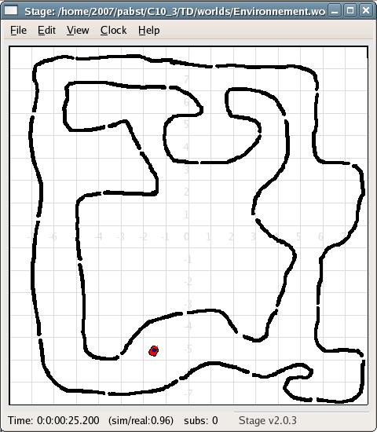
Les données :
La perception
Pour apercevoir l'environnement, le robot simulé dispose d'un télémètre laser. Il peut mesurer la distance des obstacles dans un range de 180 degrés jusqu'à une distance de huit mètres. Player Stage nous fourni un ensemble de 360 valeurs de la télémétrie laser.
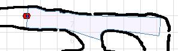
L'odometrie
L'odométrie nous donne des valeurs sur le déplacement du robot. Elles sont précalculées dans le robot. Les données que j'utilise me donnent des informations sur le déplacement depuis la dernière requête. Elles se composent de trois valeurs : L'angle relatif du déplacement, la distance du déplacement et finalement l'angle duquel l'orientation du robot à changé.
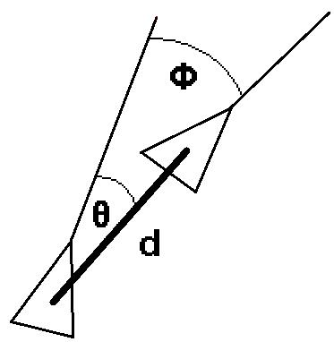
Le bruit :
Dans la réalité, ces trois données sont toujours bruité. Normalement, on y trouve un bruit blanc gaussien.
Par contre, PlayerStage fourni des valeurs parfaits. J'ai donc écrit une fonction qui ajoute du bruit artificiel pour pouvoir tester mon programme.
La technique utilisée, le FastSLAM :
Le FastSLAM est une amélioration du SLAM. L'idée de base se trouve déjà dans celui-ci :
Les algorithmes de suivit de position classiques font à chaque étape des suppositions sur la position du robot et des objets dans l'environnement. Après avoir fait ce choix, ils le prend comme donnée, il n'est plus possible de le changer. Pour améliorer ce fait, SLAM introduit un filtrage avec lequel les suppositions peuvent être corrigés quand on reçoit plus d'informations à posteriori.
Le FastSLAM reprend cette idée mais améliore la complexité de l'algorithme en introduisant un filtrage particulaire. Celui utilise un ensemble d'hypothèses sur le chemin pris du robot. A chaque étape, les nouveaux données sont évaluées et de nouvelles hypothèses sont faites. Avec les données, la qualité de chaque hypothèse est évaluée, ce qui permet de lui associer un poids. Selon ce poids, certaines hypothèses vont être oublié et d'autres vont être prises en considération de manière favorisé.
Les particules dans notre cas :
Voilà l'idée pour intégrer le filtrage particulaire dans le cas présent: À chaque particule est associé une trajectoire du chemin pris jusqu'à présent. On possède des informations sur la position du robot à chaque instant et de son angle correspondant. Avec les données de la perception qui ont été stockées également, on peut générer une image de la partie de l'environnement qui à été perçue. La qualité d'un particule dérive ainsi de la cohérence de ces images. Le poids du particule est donc fixé selon un algorithme, qui met en relation la perception actuelle avec les perceptions qui ont été mises au passé.
Cet algorithme parcourt tous les anciens statuts et il les compare avec l'image du monde actuel. L'ensemble de ces comparaisons donne un valeur qui signifie la faute entre la perception et ses prédécesseurs. Celui va être utilisé pour déterminer le poids des particules.
La technique pour comparer deux perceptions :
Pour deux scans de laser concrets on regarde chaque valeur reçu (dans notre cas 360 par scan). Celui nous donne un point qui signifie un obstacle. Ils y sont associés, la distance et l'angle. Avec les positions du robot pendant les deux perceptions, on peut chevaucher les deux images et calculer la distance minimale de notre point avec les obstacles (p.e. murs) dans l'autre image.
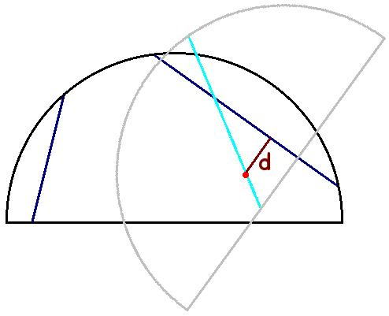
Cette méthode associe donc une petite faute à deux scans dans lesquels les objets perçus sont très similaires.
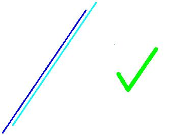
Par contre, un objet qui sera isolé dans l'autre scan va augmenter la faute.
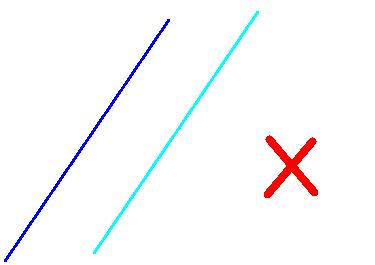
Un problème qui se pose sont les régions inconnues. Appliquant cette méthode, on va trouver une faute augmentée même avec deux scan qui ont une corrélation parfaite si on tombe sur des objets qui ne peuvent pas être perçu de la position de l'autre scan.
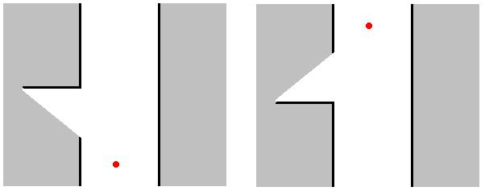
Pour résoudre ce problème, on pourrais ignorer les points qui se trouvent dans un endroit inconnu de l'autre position. Cette méthode risque de perdre une bonne corrélation comme vu dans l'exemple avec les deux murs qui correspondent bien. Une des deux se trouve complètement dans l'espace inconnu de l'autre et va donc être ignorée.
En pratique, j'ai choisi un compromis : Un point qui se trouve dans l'inconnu de l'autre scan va être ignoré quand il mène à une grande faute, sinon il va être pris.
En pratique :
Pour le projet, j'utilise le logiciel PlayerStage. Mon robot est aussi télécommandé par moi. L'algorithme n'a donc pas d'influence sur les mouvements du robot et doit se débrouiller avec les données fournis.
Pour commencer, j'ai fait la cartographie sans corrections des fautes reçus. Cela donne déjà localement de grandes erreurs et devient très vite catastrophique globalement (p.e. quand on ferme une boucle)
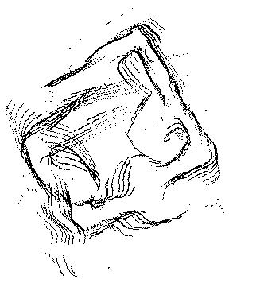
La prochaine étape était d'insérer les trajectoires qui représentent des estimations de l'état du robot.
L'algorithme compare d'abord la perception actuel avec celle de l'état précédent et choisit le particule optimale. On voit déjà une grande amélioration surtout localement. Quand même, on se rend compte que les petites fautes locales se cumulent et empêchent de fermer des grands boucles.
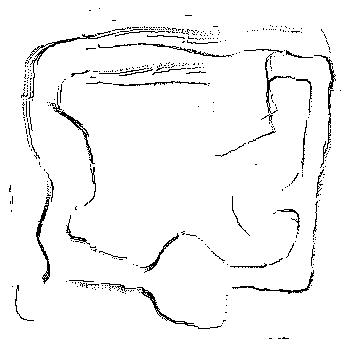
Pour améliorer cette étape, les trajectoires prennent en considération toute leur histoire. Quand on suit un couloir dont on pouvait voir une grande partie dès du début, on peut continuer son chemin dans ce couloir avec une faute minimale puisque l'estimation du robot est continuellement corrigée par rapport à la perception ancienne.
Un autre effet agréable est la correction des petites fautes après la fermeture du boucle. Quand on continue dans un couloir qu'on a déjà exploré, l'estimation du robot va s'adapter puisque les perceptions actuelles sont aussi comparées avec celles de l'exploration précédente.
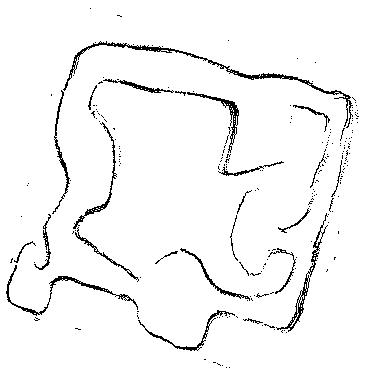
Cette méthode peut quand même trouver ses frontières avec des environnements plus grands et plus complexes.
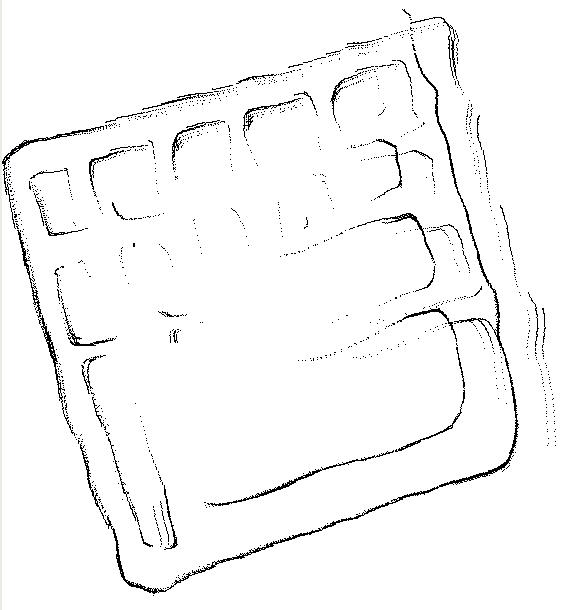
Maintenant, on doit profiter de la techniques du filtre particulaire. Quand on suit plusieurs hypothèses à la fois, on a une chance augmentée de trouver la bonne trajectoire qui aide à fermer des boucles plus grands.
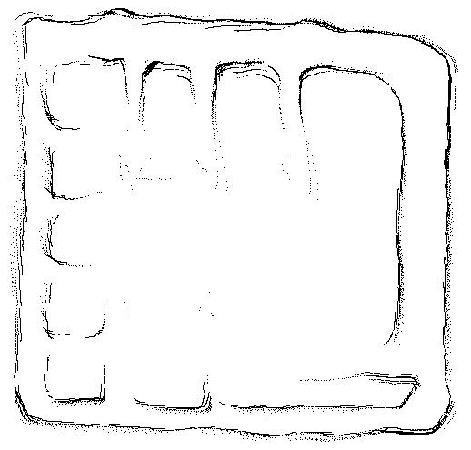
Les problèmes rencontrés :
Le problème le plus embêtant était le temps de calcul. La comparaison entre deux perceptions est très coûteux puisqu'on doit faire 360^2 comparaisons. Si on a besoin de beaucoup de temps à chaque étape, le nombre de perceptions qui peut être pris en considération diminue.
Pour résoudre ce problème, j'ai tout simplement réduit le nombre des valeurs de chaque scan. Puisque le temps du calcul dépend quadratiquement de celui-ci, on gagne beaucoup avec cette méthode.
D'ailleurs, une autre possibilité sera de seulement collectionner les données, tel qu'elles sont, et faire tout le calcul à posteriori si on a le choix.